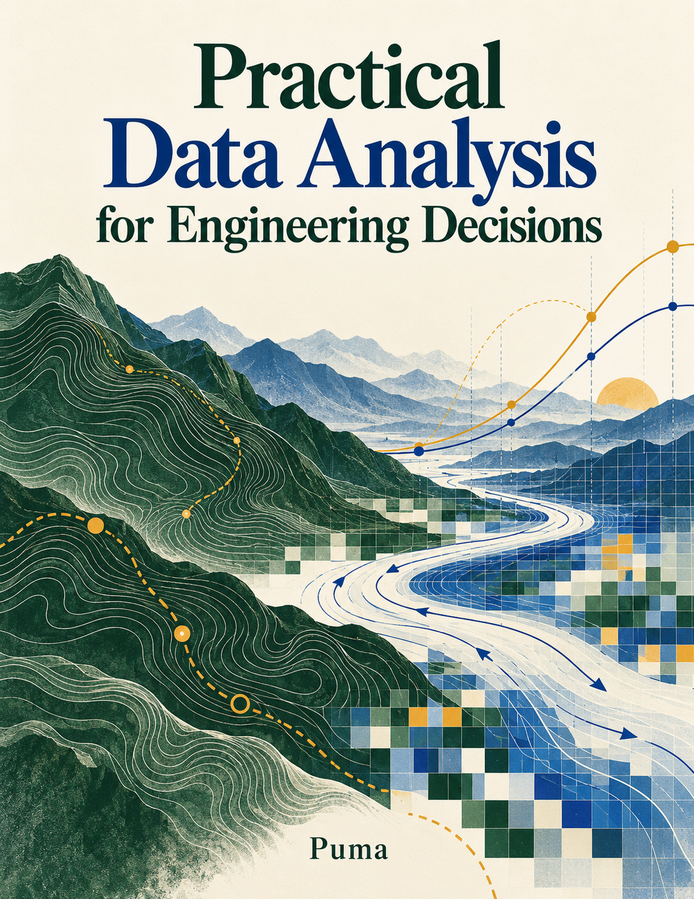

Practical data analysis for engineering decisions.
From a surprising result to a better next experiment. Learn to measure, compare, explain, and decide, with a complete scheduler investigation you can reproduce.

Build an evidence chain.
Read in order for the full investigation, or jump to the question you are working on.
Start here
How to read evidence, examples, and the companion.
A route through the expanded edition
How to read evidence, examples, and the companion.
Begin with a decision
Turn a vague performance concern into a testable question.
Measure what happened
Choose identifiers, endpoints, clocks, and units.
Make a trustworthy dataset
Make keys, joins, missingness, and provenance explicit.
See the shape of behavior
Read distributions and check the mix beneath an average.
Compare policies fairly
Preserve workload pairs and interpret uncertainty honestly.
Explain a losing scheduler run
Follow an observation through traces to a bounded explanation.
Find out what a change causes
Design an intervention that can challenge your explanation.
Analyze a system over time
Understand queues, censoring, drift, and time-ordered evaluation.
Evaluate agents and their judges
Separate task success, judge quality, cost, and safety.
Analyze training data and model results
Evaluate learning curves without leaking the test set.
Collect and interpret research data
Collect evidence with a schema and account for missing records.
Turn findings into an engineering decision
Turn analysis into a reversible, well-supported next step.
Practice with the companion
Reproduce the results, try the labs, and use the checklist.
Reason with vectors and matrices
A worked mathematical perspective with reproducible examples.
Measure images as data
A worked mathematical perspective with reproducible examples.
Analyze places and spatial relationships
A worked mathematical perspective with reproducible examples.
Analyze cash flows returns and risk
A worked mathematical perspective with reproducible examples.
Optimize under uncertainty
A worked mathematical perspective with reproducible examples.
Mathematical reference and practice
A worked mathematical perspective with reproducible examples.
Make the math tangible.
Small, transparent experiments in your browser. No installation, accounts, or backend required.
Latency, one task at a time
See the difference between a mean, a median, and a nearest-rank percentile.
Explore the example →Lab 02Keep the workload pair
Change the scenario and baseline. Each line follows one workload across policies.
Explore the example →Lab 03When the average changes its story
B succeeds more often on both easy and hard tasks. Can you make its overall result look worse?
Explore the example →Lab 04Agreement is only one denominator
Edit the confusion matrix and watch three apparently similar accuracy statements separate.
Explore the example →Lab 05Projection and information loss
Rotate a direction or keep fewer principal components. Which information survives?
Explore the example →Lab 06A threshold becomes a measurement
Change the segmentation threshold and pixel calibration. Inspect the largest connected object.
Explore the example →Lab 07A boundary changes the join
Move point C across the shared border and choose what it means to be inside.
Explore the example →Lab 08Discount cash flows, compound returns
Change a discount rate or return scale. Arithmetic averages do not describe compounded wealth.
Explore the example →Lab 09More workers, more overhead
Choose a worker budget and coordination cost. Inspect the best integer choice inside that budget.
Explore the example →Know what the evidence is.
The scheduler case uses measured Python-simulator reports and event traces. It is not a real-device benchmark. Agent and research examples are explicitly synthetic.
Keep the work inspectable.
Read the sources and evidence notes, inspect the input tables in each lab, or download the companion to rerun the analysis yourself.